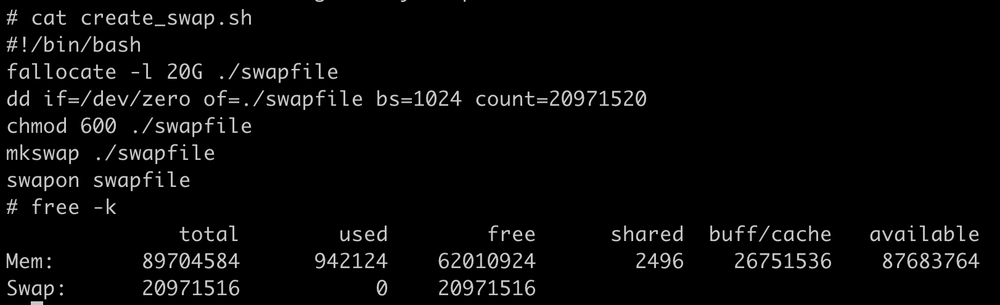
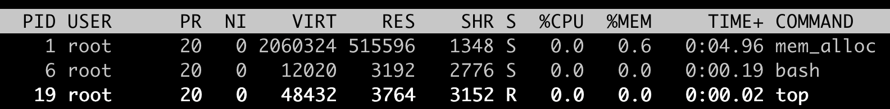
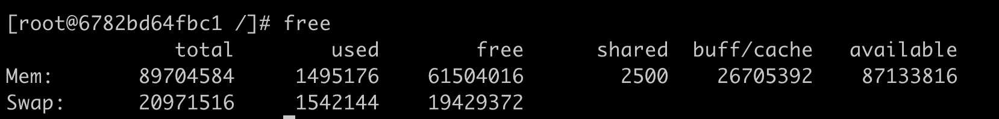
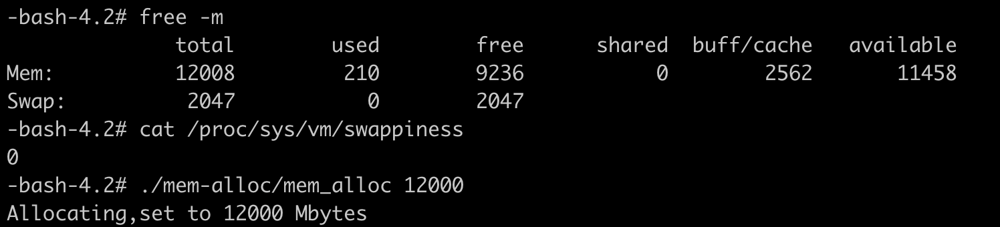
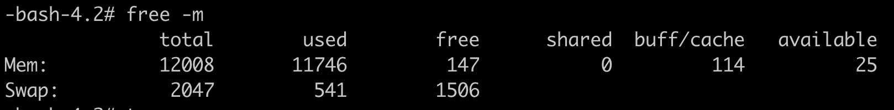
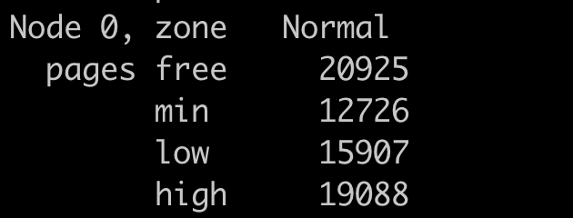
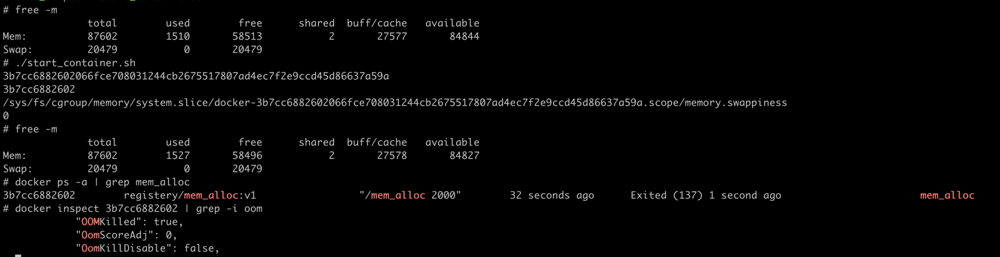
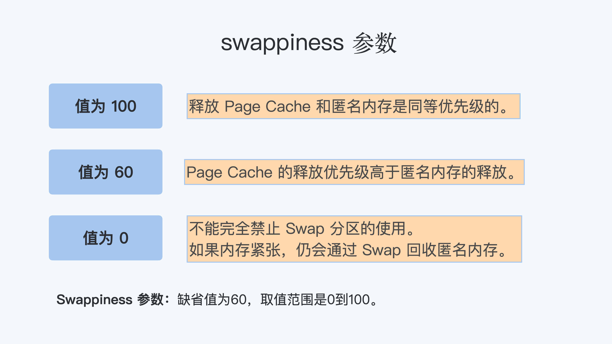

- 00 开篇词 一个态度两个步骤，成为容器实战高手.md.html
- 01 认识容器：容器的基本操作和实现原理.md.html
- 02 理解进程（1）：为什么我在容器中不能kill 1号进程？.md.html
- 03 理解进程（2）：为什么我的容器里有这么多僵尸进程？.md.html
- 04 理解进程（3）：为什么我在容器中的进程被强制杀死了？.md.html
- 05 容器CPU（1）：怎么限制容器的CPU使用？.md.html
- 06 容器CPU（2）：如何正确地拿到容器CPU的开销？.md.html
- 07 Load Average：加了CPU Cgroup限制，为什么我的容器还是很慢？.md.html
- 08 容器内存：我的容器为什么被杀了？.md.html
- 09 Page Cache：为什么我的容器内存使用量总是在临界点.md.html
- 10 Swap：容器可以使用Swap空间吗？.md.html
- 11 容器文件系统：我在容器中读写文件怎么变慢了.md.html
- 12 容器文件Quota：容器为什么把宿主机的磁盘写满了？.md.html
- 13 容器磁盘限速：我的容器里磁盘读写为什么不稳定.md.html
- 14 容器中的内存与IO：容器写文件的延时为什么波动很大？.md.html
- 15 容器网络：我修改了procsysnet下的参数，为什么在容器中不起效？.md.html
- 16 容器网络配置（1）：容器网络不通了要怎么调试.md.html
- 17 容器网络配置（2）：容器网络延时要比宿主机上的高吗.md.html
- 18 容器网络配置（3）：容器中的网络乱序包怎么这么高？.md.html
- 19 容器安全（1）：我的容器真的需要privileged权限吗.md.html
- 20 容器安全（2）：在容器中，我不以root用户来运行程序可以吗？.md.html
- 加餐01 案例分析：怎么解决海量IPVS规则带来的网络延时抖动问题？.md.html
- 加餐02 理解perf：怎么用perf聚焦热点函数？.md.html
- 加餐03 理解ftrace（1）：怎么应用ftrace查看长延时内核函数？.md.html
- 加餐04 理解ftrace（2）：怎么理解ftrace背后的技术tracepoint和kprobe？.md.html
- 加餐05 eBPF：怎么更加深入地查看内核中的函数？.md.html
- 加餐06 BCC：入门eBPF的前端工具.md.html
- 加餐福利 课后思考题答案合集.md.html
- 结束语 跳出舒适区，突破思考的惰性.md.html
10 Swap：容器可以使用Swap空间吗？
你好，我是程远。这一讲，我们来看看容器中是否可以使用 Swap 空间。
用过 Linux 的同学应该都很熟悉 Swap 空间了，简单来说它就是就是一块磁盘空间。
当内存写满的时候，就可以把内存中不常用的数据暂时写到这个 Swap 空间上。这样一来，内存空间就可以释放出来，用来满足新的内存申请的需求。
它的好处是可以应对一些瞬时突发的内存增大需求，不至于因为内存一时不够而触发 OOM Killer，导致进程被杀死。
那么对于一个容器，特别是容器被设置了 Memory Cgroup 之后，它还可以使用 Swap 空间吗？会不会出现什么问题呢？
问题再现
接下来，我们就结合一个小例子，一起来看看吧。
首先，我们在一个有 Swap 空间的节点上启动一个容器，设置好它的 Memory Cgroup 的限制，一起来看看接下来会发生什么。
如果你的节点上没有 Swap 分区，也没有关系，你可以用下面的这组命令来新建一个。
这个例子里，Swap 空间的大小是 20G，你可以根据自己磁盘空闲空间来决定这个 Swap 的大小。执行完这组命令之后，我们来运行 free 命令，就可以看到 Swap 空间有 20G。
输出的结果你可以参考下面的截图。

然后我们再启动一个容器，和 OOM 那一讲里的例子差不多，容器的 Memory Cgroup 限制为 512MB，容器中的 mem_alloc 程序去申请 2GB 内存。
你会发现，这次和上次 OOM 那一讲里的情况不一样了，并没有发生 OOM 导致容器退出的情况，容器运行得好好的。
从下面的图中，我们可以看到，mem_alloc 进程的 RSS 内存一直在 512MB（RES: 515596）左右。

那我们再看一下 Swap 空间，使用了 1.5GB (used 1542144KB)。输出的结果如下图，简单计算一下，1.5GB + 512MB，结果正好是 mem_alloc 这个程序申请的 2GB 内存。

通过刚刚的例子，你也许会这么想，因为有了 Swap 空间，本来会被 OOM Kill 的容器，可以好好地运行了。初看这样似乎也挺好的，不过你仔细想想，这样一来，Memory Cgroup 对内存的限制不就失去了作用么？
我们再进一步分析，如果一个容器中的程序发生了内存泄漏（Memory leak），那么本来 Memory Cgroup 可以及时杀死这个进程，让它不影响整个节点中的其他应用程序。结果现在这个内存泄漏的进程没被杀死，还会不断地读写 Swap 磁盘，反而影响了整个节点的性能。
你看，这样一分析，对于运行容器的节点，你是不是又觉得应该禁止使用 Swap 了呢?
我想提醒你，不能一刀切地下结论，我们总是说，具体情况要具体分析，我们落地到具体的场景里，就会发现情况又没有原先我们想得那么简单。
比如说，某一类程序就是需要 Swap 空间，才能防止因为偶尔的内存突然增加而被 OOM Killer 杀死。因为这类程序重新启动的初始化时间会很长，这样程序重启的代价就很大了，也就是说，打开 Swap 对这类程序是有意义的。
这一类程序一旦放到容器中运行，就意味着它会和“别的容器”在同一个宿主机上共同运行，那如果这个“别的容器” 如果不需要 Swap，而是希望 Memory Cgroup 的严格内存限制。
这样一来，在这一个宿主机上的两个容器就会有冲突了，我们应该怎么解决这个问题呢？要解决这个问题，我们先来看看 Linux 里的 Swappiness 这个概念，后面它可以帮到我们。
如何正确理解 swappiness 参数？
在普通 Linux 系统上，如果你使用过 Swap 空间，那么你可能配置过 proc 文件系统下的 swappiness 这个参数 (/proc/sys/vm/swappiness)。swappiness 的定义在Linux 内核文档中可以找到，就是下面这段话。
swappiness
This control is used to define how aggressive the kernel will swap memory pages. Higher values will increase aggressiveness, lower values decrease the amount of swap. A value of 0 instructs the kernel not to initiate swap until the amount of free and file-backed pages is less than the high water mark in a zone.
The default value is 60.
前面两句话大致翻译过来，意思就是 swappiness 可以决定系统将会有多频繁地使用交换分区。
一个较高的值会使得内核更频繁地使用交换分区，而一个较低的取值，则代表着内核会尽量避免使用交换分区。swappiness 的取值范围是 0–100，缺省值 60。
我第一次读到这个定义，再知道了这个取值范围后，我觉得这是一个百分比值，也就是定义了使用 Swap 空间的频率。
当这个值是 100 的时候，哪怕还有空闲内存，也会去做内存交换，尽量把内存数据写入到 Swap 空间里；值是 0 的时候，基本上就不做内存交换了，也就不写 Swap 空间了。
后来再回顾的时候，我发现这个想法不能说是完全错的，但是想得简单了些。那这段 swappiness 的定义，应该怎么正确地理解呢？
你还记得，我们在上一讲里说过的两种内存类型 Page Cache 和 RSS 么?
在有磁盘文件访问的时候，Linux 会尽量把系统的空闲内存用作 Page Cache 来提高文件的读写性能。在没有打开 Swap 空间的情况下，一旦内存不够，这种情况下就只能把 Page Cache 释放了，而 RSS 内存是不能释放的。
在 RSS 里的内存，大部分都是没有对应磁盘文件的内存，比如用 malloc() 申请得到的内存，这种内存也被称为匿名内存（Anonymous memory）。那么当 Swap 空间打开后，可以写入 Swap 空间的，就是这些匿名内存。
所以在 Swap 空间打开的时候，问题也就来了，在内存紧张的时候，Linux 系统怎么决定是先释放 Page Cache，还是先把匿名内存释放并写入到 Swap 空间里呢？
我们一起来分析分析，都可能发生怎样的情况。最可能发生的是下面两种情况：
第一种情况是，如果系统先把 Page Cache 都释放了，那么一旦节点里有频繁的文件读写操作，系统的性能就会下降。
还有另一种情况，如果 Linux 系统先把匿名内存都释放并写入到 Swap，那么一旦这些被释放的匿名内存马上需要使用，又需要从 Swap 空间读回到内存中，这样又会让 Swap（其实也是磁盘）的读写频繁，导致系统性能下降。
显然，我们在释放内存的时候，需要平衡 Page Cache 的释放和匿名内存的释放，而 swappiness，就是用来定义这个平衡的参数。
那么 swappiness 具体是怎么来控制这个平衡的？我们看一下在 Linux 内核代码里是怎么用这个 swappiness 参数。
我们前面说了 swappiness 的这个值的范围是 0 到 100，但是请你一定要注意，它不是一个百分比，更像是一个权重。它是用来定义 Page Cache 内存和匿名内存的释放的一个比例。
我结合下面的这段代码具体给你讲一讲。
我们可以看到，这个比例是 anon_prio: file_prio，这里 anon_prio 的值就等于 swappiness。下面我们分三个情况做讨论：
第一种情况，当 swappiness 的值是 100 的时候，匿名内存和 Page Cache 内存的释放比例就是 100: 100，也就是等比例释放了。
第二种情况，就是 swappiness 缺省值是 60 的时候，匿名内存和 Page Cache 内存的释放比例就是 60 : 140，Page Cache 内存的释放要优先于匿名内存。
/*
\* With swappiness at 100, anonymous and file have the same priority.
\* This scanning priority is essentially the inverse of IO cost.
*/
anon_prio = swappiness;
file_prio = 200 - anon_prio;
还有一种情况， 当 swappiness 的值是 0 的时候，会发生什么呢？这种情况下，Linux 系统是不允许匿名内存写入 Swap 空间了吗？
我们可以回到前面，再看一下那段 swappiness 的英文定义，里面特别强调了 swappiness 为 0 的情况。
当空闲内存少于内存一个 zone 的"high water mark"中的值的时候，Linux 还是会做内存交换，也就是把匿名内存写入到 Swap 空间后释放内存。
在这里 zone 是 Linux 划分物理内存的一个区域，里面有 3 个水位线（water mark），水位线可以用来警示空闲内存的紧张程度。
这里我们可以再做个试验来验证一下，先运行 echo 0 > /proc/sys/vm/swappiness 命令把 swappiness 设置为 0， 然后用我们之前例子里的 mem_alloc 程序来申请内存。
比如我们的这个节点上内存有 12GB，同时有 2GB 的 Swap，用 mem_alloc 申请 12GB 的内存，我们可以看到 Swap 空间在 mem_alloc 调用之前，used=0，输出结果如下图所示。

接下来，调用 mem_alloc 之后，Swap 空间就被使用了。

因为 mem_alloc 申请 12GB 内存已经和节点最大内存差不多了，我们如果查看 cat /proc/zoneinfo ，也可以看到 normal zone 里 high （water mark）的值和 free 的值差不多，这样在 free<high 的时候，系统就会回收匿名内存页面并写入 Swap 空间。

好了，在这里我们介绍了 Linux 系统里 swappiness 的概念，它是用来决定在内存紧张时候，回收匿名内存和 Page Cache 内存的比例。
swappiness 的取值范围在 0 到 100，值为 100 的时候系统平等回收匿名内存和 Page Cache 内存；一般缺省值为 60，就是优先回收 Page Cache；即使 swappiness 为 0，也不能完全禁止 Swap 分区的使用，就是说在内存紧张的时候，也会使用 Swap 来回收匿名内存。
解决问题
那么运行了容器，使用了 Memory Cgroup 之后，swappiness 怎么工作呢？
如果你查看一下 Memory Cgroup 控制组下面的参数，你会看到有一个 memory.swappiness 参数。这个参数是干啥的呢？
memory.swappiness 可以控制这个 Memroy Cgroup 控制组下面匿名内存和 page cache 的回收，取值的范围和工作方式和全局的 swappiness 差不多。这里有一个优先顺序，在 Memory Cgorup 的控制组里，如果你设置了 memory.swappiness 参数，它就会覆盖全局的 swappiness，让全局的 swappiness 在这个控制组里不起作用。
不过，这里有一点不同，需要你留意：当 memory.swappiness = 0 的时候，对匿名页的回收是始终禁止的，也就是始终都不会使用 Swap 空间。
这时 Linux 系统不会再去比较 free 内存和 zone 里的 high water mark 的值，再决定一个 Memory Cgroup 中的匿名内存要不要回收了。
请你注意，当我们设置了"memory.swappiness=0 时，在 Memory Cgroup 中的进程，就不会再使用 Swap 空间，知道这一点很重要。
我们可以跑个容器试一试，还是在一个有 Swap 空间的节点上运行，运行和这一讲开始一样的容器，唯一不同的是把容器对应 Memory Cgroup 里的 memory.swappiness 设置为 0。

这次我们在容器中申请内存之后，Swap 空间就没有被使用了，而当容器申请的内存超过 memory.limit_in_bytes 之后，就发生了 OOM Kill。
好了，有了"memory.swappiness = 0"的配置和功能，就可以解决我们在这一讲里最开始提出的问题了。
在同一个宿主机上，假设同时存在容器 A 和其他容器，容器 A 上运行着需要使用 Swap 空间的应用，而别的容器不需要使用 Swap 空间。
那么，我们还是可以在宿主机节点上打开 Swap 空间，同时在其他容器对应的 Memory Cgroups 控制组里，把 memory.swappiness 这个参数设置为 0。这样一来，我们不但满足了容器 A 的需求，而且别的容器也不会受到影响，仍然可以严格按照 Memory Cgroups 里的 memory.limit_in_bytes 来限制内存的使用。
总之，memory.swappiness 这个参数很有用，通过它可以让需要使用 Swap 空间的容器和不需要 Swap 的容器，同时运行在同一个宿主机上。
重点总结
这一讲，我们主要讨论的问题是在容器中是否可以使用 Swap？
这个问题没有看起来那么简单。当然了，只要在宿主机节点上打开 Swap 空间，在容器中就是可以用到 Swap 的。但出现的问题是在同一个宿主机上，对于不需要使用 swap 的容器， 它的 Memory Cgroups 的限制也失去了作用。
针对这个问题，我们学习了 Linux 中的 swappiness 这个参数。swappiness 参数值的作用是，在系统里有 Swap 空间之后，当系统需要回收内存的时候，是优先释放 Page Cache 中的内存，还是优先释放匿名内存（也就是写入 Swap）。
swappiness 的取值范围在 0 到 100 之间，我们可以记住下面三个值：
值为 100 的时候， 释放 Page Cache 和匿名内存是同等优先级的。
值为 60，这是大多数 Linux 系统的缺省值，这时候 Page Cache 的释放优先级高于匿名内存的释放。
值为 0 的时候，当系统中空闲内存低于一个临界值的时候，仍然会释放匿名内存并把页面写入 Swap 空间。

swappiness 参数除了在 proc 文件系统下有个全局的值外，在每个 Memory Cgroup 控制组里也有一个 memory.swappiness，那它们有什么不同呢？
不同就是每个 Memory Cgroup 控制组里的 swappiness 参数值为 0 的时候，就可以让控制组里的内存停止写入 Swap。这样一来，有了 memory.swappiness 这个参数后，需要使用 Swap 和不需要 Swap 的容器就可以在同一个宿主机上同时运行了，这样对于硬件资源的利用率也就更高了。
思考题
在一个有 Swap 分区的节点上用 Docker 启动一个容器，对它的 Memory Cgroup 控制组设置一个内存上限 N，并且将 memory.swappiness 设置为 0。这时，如果在容器中启动一个不断读写文件的程序，同时这个程序再申请 1/2N 的内存，请你判断一下，Swap 分区中会有数据写入吗？
欢迎在留言区分享你的收获和疑问。如果这篇文章让你有所收获，也欢迎分享给你的朋友，一起交流和学习。